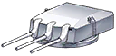
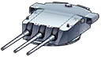
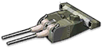
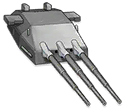

| 艦種 | 彈種 | 輕甲 | 中甲 | 重甲 |
| 驅逐 | 通常彈 | 100% | 50% | 20% |
| 高爆彈 | 120% | 60% | 60% | |
| 穿甲彈 | 90% | 70% | 40% | |
| 輕巡 | 通常彈 | 100% | 80% | 60% |
| 高爆彈 | 145% | 105% | 70% | |
| 穿甲彈 | 100% | 80% | 60% | |
| 重巡 | 通常彈 | 100% | 90% | 50% |
| 高爆彈 | 135% | 95% | 70% | |
| 穿甲彈 | 75% | 110% | 75% | |
| 戰艦 | 通常彈 | 70% | 100% | 90% |
| 高爆彈 | 140% | 110% | 90% | |
| 穿甲彈 | 45% | 130% | 110% | |
| 魚雷 | 通常彈 | 80% | 100% | 130% |
| 聲導彈 | 80% | 100% | 130% |
| 圖示 | 名稱 | 彈種 | 簡稱 | 備註 |
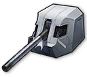 |
138.6mm單裝砲Mle1929 | 通常彈 | 金凱旋 | 畢業砲 |
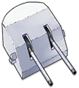 |
雙聯裝127mm高平兩用砲MK12 | 高爆彈 | 金高平 | 準畢業砲 |
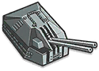 |
雙聯100mm98式高射砲 | 通常彈 | 金秋月 | 射速畢業砲 |
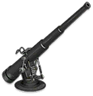 |
76mm火砲 | 通常彈 | 76砲 | 只剩射速 |
| 138.6mm單裝砲Mle1929 | 通常彈 | 紫凱旋 | 過渡砲 | |
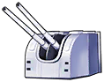 |
雙聯裝120mm主砲 | 通常彈 | 120 | 過渡過渡砲 |
| 圖示 | 名稱 | 彈種 | 簡稱 | 備註 |
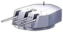 |
試作型三聯裝152mm主砲 | 穿甲彈 | 海王星砲 | 穿甲畢業砲 |
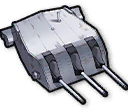 |
試作型三聯裝152mm高平兩用砲Mk17 | 高爆彈 | 西雅圖砲 | 高爆畢業砲 |
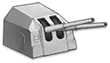 |
雙聯裝TbtsKC36式150mm主砲 | 穿甲彈 | 克爹砲 | 穿甲準畢業砲 |
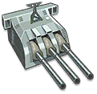 |
155mm三連裝炮 | 高爆彈 | 貝爺砲 | 高爆準畢業砲 |
| 圖示 | 名稱 | 彈種 | 簡稱 | 備註 |
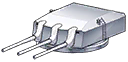 |
試作型三聯裝203mmSKC主砲 | 穿甲彈 | 羅恩砲 | 穿甲畢業砲 |
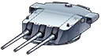 |
試作型三聯裝203mm艦炮 | 高爆彈 | 路易砲 | 高爆畢業砲 |
| 雙聯裝203mmSKC主砲 | 穿甲彈 | 歐根砲 | 穿甲準畢業砲 | |
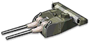 |
試作型203mm(3號)連裝炮 | 高爆彈 | 愛宕砲 | 高爆準畢業砲 |
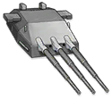 |
三聯283mmSKC28主砲 | 穿甲彈 | 德意志砲 | 德意志級用 |
|
試作型三聯裝310mm主砲 | 高爆彈 | 吾妻砲 | 吾妻用 |
| 圖示 | 名稱 | 彈種 | 簡稱 | 備註 |
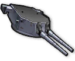 |
試作型雙聯裝457mm主砲MKA | 穿甲彈 | 喬治亞砲 | 畢業砲 |
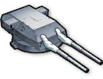 |
試作型雙聯裝406mmSKC主砲 | 高爆彈 | 大帝砲 | 射速畢業砲 |
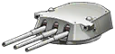 |
試作型三聯裝381mm主砲 | 高爆彈 | 三連381 | 火力準畢業砲 |
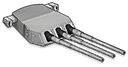 |
三聯裝406mm主砲MK6 | 高爆彈 | 406MK6 | 火力準畢業砲 |
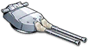 |
雙聯裝381mm主砲.改 | 高爆彈 | 381改 | 射速準畢業砲 |
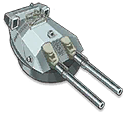 |
410mm連裝炮 | 高爆彈 | 410 | 射速準畢業砲 |
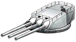 |
試作型410mm三連裝炮 | 穿甲彈 | 410穿甲 | 火力準畢業砲(穿甲) |
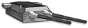 |
雙聯380mmSKC主砲 | 穿甲彈 | 380 | 射速準畢業砲(穿甲) |
 |
三聯283mmSKC34主砲 | 通常彈 | 283SKC34 | 只剩射速 |
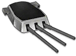 |
三聯裝406mm主砲 | 通常彈 | 406 | 麻薩諸塞用 |
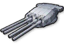 |
四聯裝380mm主砲Mle1935 | 高爆彈 | 黎姐砲 | 讓・巴爾用 |
| 圖示 | 名稱 | 簡稱 | 用途 | 備註 |
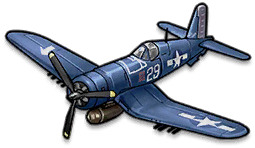 |
F4U(VF-17“海盜”中隊) | 金海盜 | 對海輸出(1) | 戰鬥機天花板 |
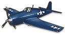 |
F6F地獄貓 | 地獄貓 | 對海輸出(3)、防空(4) | 畢業戰鬥機 |
| 烈風 | 烈風 | 對海輸出(2) | 對海畢業戰鬥機 | |
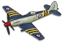 |
海毒牙 | 海毒牙 | 對海輸出(4) | 對海準畢業戰鬥機 |
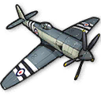 |
海怒 | 海怒 | 對海輸出(5) | 對海準畢業戰鬥機 |
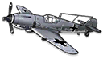 |
Me-155A艦載戰鬥機 | ME | 快速升空(2)、防空(1) | 調速、防空畢業戰鬥機 |
| XF5F天箭 | 天箭 | 快速升空(1)、防空(2) | 調速、防空畢業戰鬥機 | |
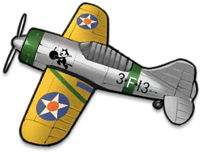 |
F2A水牛(薩奇隊) | F2A | 快速升空(3)、防空(3) | 調速、防空準畢業戰鬥機 |
| 圖示 | 名稱 | 簡稱 | 用途 | 備註 |
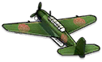 |
流星 | 金流星 | 集束雷、防空(1) | 畢業集束雷 |
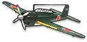 |
天山 | 天山 | 集束雷 | 準畢業集束雷 |
| 流星 | 紫流星 | 集束雷 | 準畢業集束雷 | |
| 梭魚 | 金梭魚 | 平行雷 | 畢業平行雷 | |
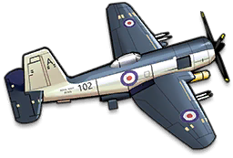 |
火把 | 火把 | 平行雷、防空(2) | 準畢業平行雷 |
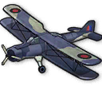 |
青花魚 | 青花魚 | 平行雷、防空(3)、快速升空(1) | 最速魚雷機 |
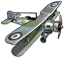 |
劍魚(818中隊) | 劍魚 | 平行雷、減速 | 輔助魚雷機 |
| 圖示 | 名稱 | 簡稱 | 用途 | 備註 |
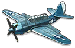 |
SB2C地獄俯衝者 | SB2C | 對海輸出(1) | 畢業轟炸機 |
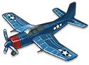 |
BTD-1毀滅者 | 金毀滅 | 對海輸出(2) | 畢業轟炸機 |
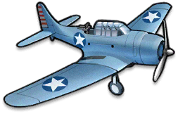 |
SBD無畏(麥克拉斯基隊) | SBD | 對海輸出(3) | 準畢業轟炸機 |
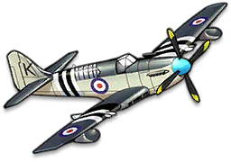 |
螢火蟲 | 螢火蟲 | 對海輸出(4)、防空(2) | 準畢業轟炸機 |
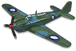 |
海燕 | 海燕 | 快速升空(1)、防空(1) | 最速轟炸機 |
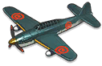 |
彗星 | 金彗星 | 快速升空(2) | 次速轟炸機 |
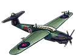 |
梭魚(831中隊) | 831 | 破甲 | 輔助轟炸機 |